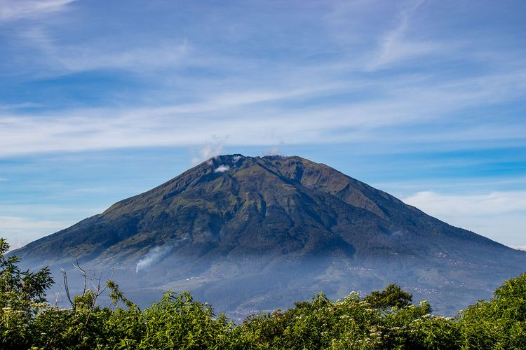

|
GUNUNG
Bukit, biasanya memiliki ketinggian setidaknya 300 meter (1.000 kaki) di atas tanah sekitarnya. Beberapa gunung adalah puncak yang berdiri sendiri, tetapi sebagian besar merupakan bagian dari rangkaian pegunungan.[1]
Pegunungan terbentuk melalui kekuatan tektonik, erosi, atau aktivitas vulkanik,[1] yang bekerja pada skala waktu hingga puluhan juta tahun.[2] Begitu pembentukan gunung berhenti, gunung-gunung perlahan-lahan akan semakin landai melalui aksi pelapukan, melalui kemerosotan, serta bentuk-bentuk pemborosan massal lainnya, serta melalui erosi oleh sungai dan gletser.
Ketinggian di pegunungan menghasilkan iklim yang lebih dingin daripada di permukaan laut pada garis lintang yang sama. Iklim yang lebih dingin ini sangat mempengaruhi ekosistem pegunungan: ketinggian gunung yang berbeda-beda menjadi habitat tumbuhan dan hewan yang berbeda pula. Karena medan dan iklim yang kurang ramah, gunung cenderung lebih sedikit digunakan untuk pertanian dan lebih banyak untuk ekstraksi sumber daya, seperti pertambangan dan penebangan, atau dijadikan tempat rekreasi, seperti mendaki gunung dan bermain ski.
Gunung tertinggi di Bumi adalah Gunung Everest di Himalaya, Asia, yang puncaknya mencapai ketinggian 8850 m (29035 ft) di atas permukaan laut rata-rata. Gunung tertinggi di antara semua planet Tata Surya adalah Olympus Mons di Mars dengan ketinggian 21171 m (69459 ft).
|

|